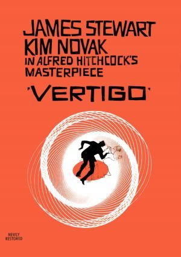
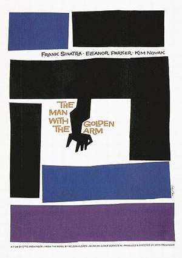
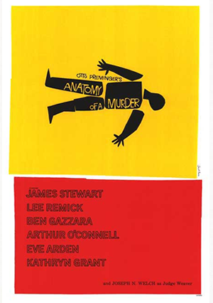
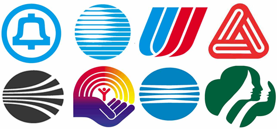

Saul Bass
Saul Bass (Nova Iorque, 8 de maio de 1920 — Los Angeles, 25 de Abril de 1996) foi um designer gráfico e cineasta, mais conhecido por seu trabalho de design gráfico no cinema e abertura de filmes, pelo qual é considerando por muitos como um paradigma dessa atividade.
Durante sua carreira de ele trabalhanou com alguns dos maiores cineastas de Hollywood, entre eles Alfred Hitchcock, Otto Preminger, Stanley Kubrick e Martin Scorsese. Talvez sua abertura mais conhecida seja os creditos iniciais em animação de papel recortado de um viciado em heroína do filme, dirigido por Otto Preminger, The Man with the Golden Arm.
  Saul Bass também é conhecido por projetar a identidade visual da AT&T, United Airlines, Minolta, Bell, e Warner Communications.
